Differential Overhaul
BACKLASH INSPECTION
1. Place differential assembly on V-blocks and install both axles.
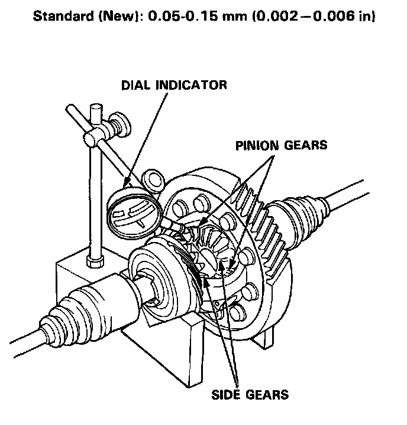
2. Measure the backlash of both pinion gears.
3. If the backlash is not within the standard, replace the differential carrier.
FINAL DRIVEN GEAR REPLACEMENT
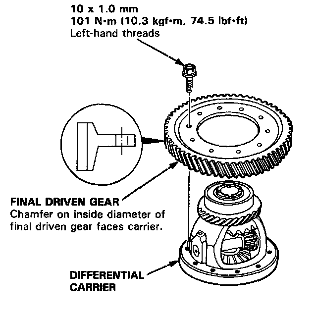
1. Remove the bolts in a crisscross pattern in several steps, then remove the final driven gear from the differential carrier.
NOTE: The final driven gear bolts have left-hand threads.
2. Install the final driven gear by tightening the bolts in a crisscross pattern in several steps.
BEARING REPLACEMENT
NOTE: Check the ball bearings for wear and rough rotation. If bearings are OK, removal is not necessary.
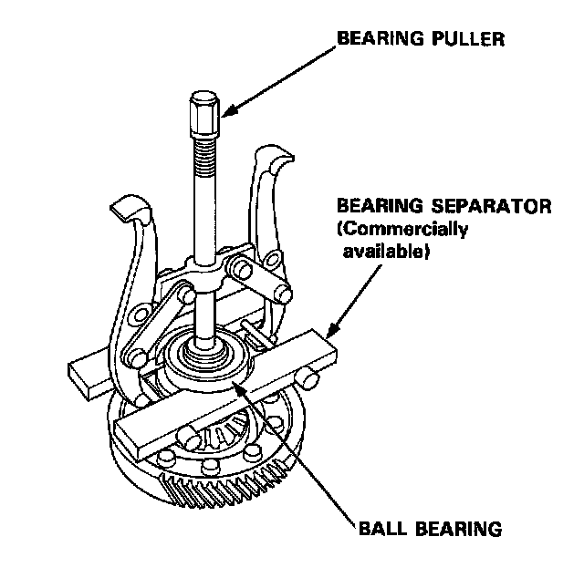
1. Remove the ball bearings using a standard bearing puller and bearing separator as shown.
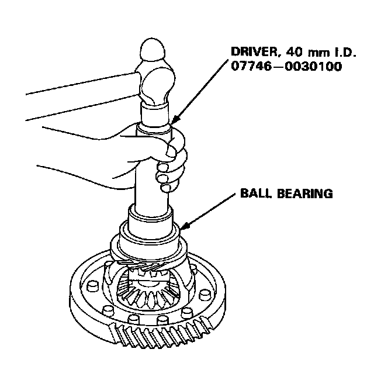
2. Install new ball bearings using the special tool as shown.
NOTE: Drive the bearings squarely until they bottom against the carrier.
OIL SEAL REMOVAL
1. Remove the differential assembly.
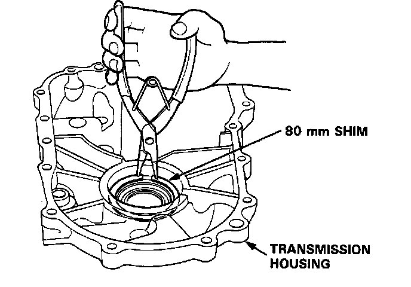
2. Remove the 80 mm shim from the transmission housing.
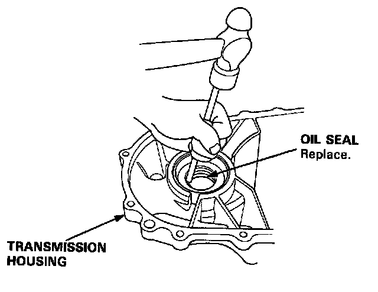
3. Remove the oil seal from the transmission housing.
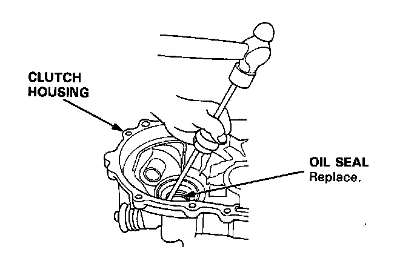
4. Remove the oil seal from the clutch housing.
SIDE CLEARANCE ADJUSTMENT
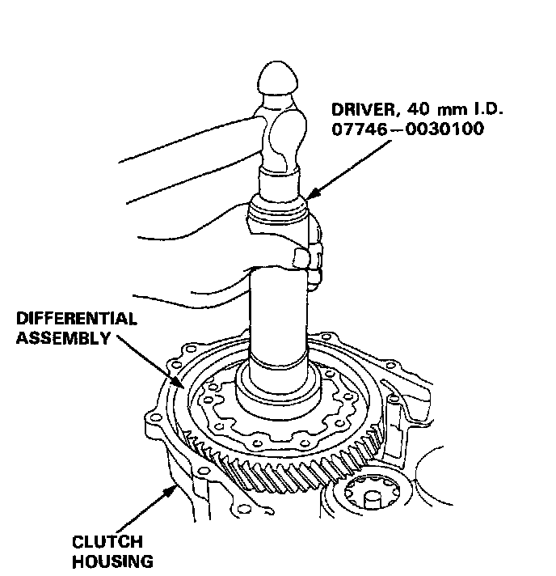
1. Install the differential assembly, making sure it bottoms in the clutch housing, using the special tool as shown.
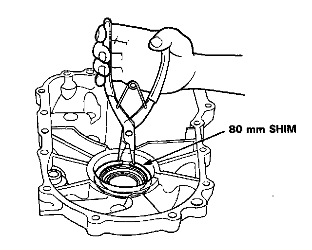
2. Install the 80 mm shim.
NOTE: Install the 80 mm shim that was removed.
3. Install the transmission housing.
NOTE: Do not apply liquid gasket to the mating surface of the clutch housing.
4. Tighten the transmission housing attaching bolts.
8 x 1.25 mm 27 Nm (2.8 kgf.m, 20 ft. lbs.)
5. Use the special tool to bottom the differential assembly in the clutch housing.
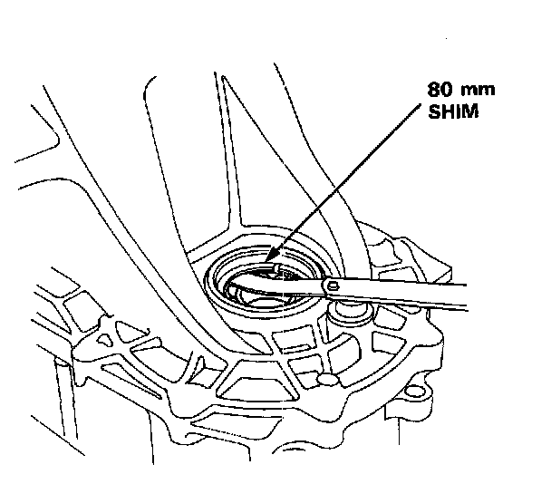
6. Measure clearance between the 80 mm shim and bearing outer race in the transmission housing.
7. If the clearance is not within the standard, select a new 80 mm shim from the table.
Standard: 0 - 0.10 mm (0.004 inch)
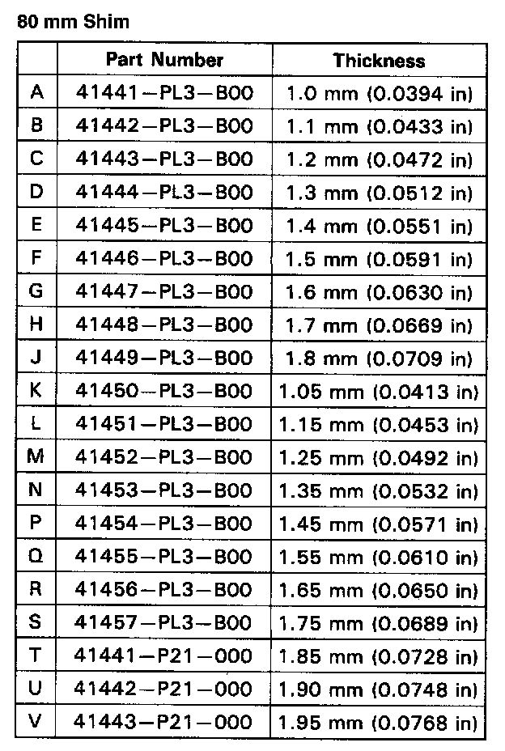
NOTE: If the clearance measured in step 6 is within the standard, it is not necessary to go to step 9.
8. Remove the bolts and transmission housing.
9. Replace the 80 mm shim selected in step 7, then recheck the clearance.
10. Reassemble the transmission and install the transmission housing.
OIL SEAL INSTALLATION
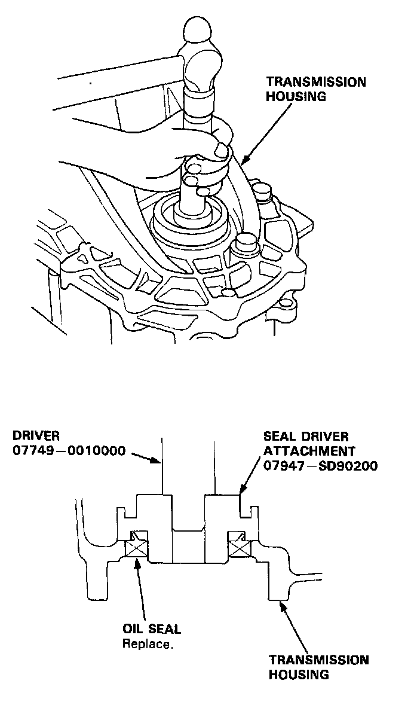
1. Install the oil seal into the transmission housing using the special tools as shown.
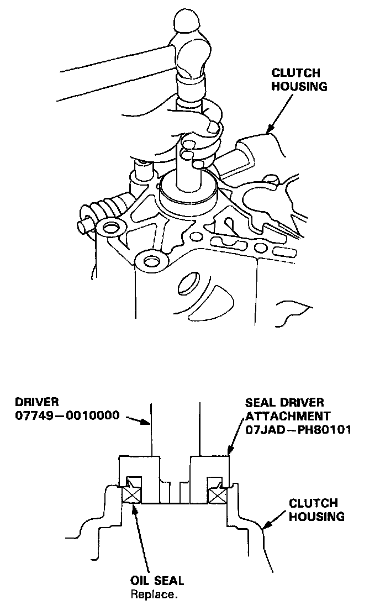
2. Install the oil seal into the clutch housing using the special tools as shown.